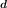
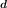
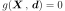
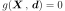
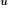
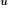
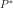
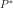
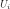

Strong Maximum Test¶
 denotes a random input vector, representing the
sources of uncertainties,
denotes a random input vector, representing the
sources of uncertainties,  its joint density probability,
 a deterministic vector, representing the fixed
variables
its joint density probability,
 a deterministic vector, representing the fixed
variables  the limit state function of
the model,
the limit state function of
the model,
 the event considered here and 
its boundary (also called limit state surface).
the event considered here and 
its boundary (also called limit state surface). :
:(1)¶
may be evaluated with the FORM or SORM method.
 , these analytical
methods uses the Nataf isoprobabilistic transformation which maps the
probabilistic model in terms of onto an equivalent
model in terms of
, these analytical
methods uses the Nataf isoprobabilistic transformation which maps the
probabilistic model in terms of onto an equivalent
model in terms of  independent standard normal random
independent standard normal random
 (refer to to have details on the transformation). In
that new -space, the event has the new expression
defined from the transformed limit state function of the model
:
and its boundary:
(refer to to have details on the transformation). In
that new -space, the event has the new expression
defined from the transformed limit state function of the model
:
and its boundary:
 . comes from points located in the vicinity
of a particular point , the design point, defined in the
-space as the point located on the limit state surface
and of maximal likelihood. Given the probabilistic characteristics of
the -space, has a geometrical
interpretation : it is the point located on the event boundary and at
minimal distance from the center of the -space. Thus,
the design point is the result of a constrained
optimization problem. and are not taken into account in the FORM and SORM
approximations. .
. comes from points located in the vicinity
of a particular point , the design point, defined in the
-space as the point located on the limit state surface
and of maximal likelihood. Given the probabilistic characteristics of
the -space, has a geometrical
interpretation : it is the point located on the event boundary and at
minimal distance from the center of the -space. Thus,
the design point is the result of a constrained
optimization problem. and are not taken into account in the FORM and SORM
approximations. .- the true design point, which means a global maximum point,
- a strong design point, which means that there is no other local maximum located on the event boundary and which likelihood is slightly inferior to the design point one.
is not
negligible as regards the approximations Form and SORM (case of
). The contribution of a point is considered as
negligible when its likelihood in the -space is more
than  -times lesser than the design point one. The
radius is the distance to the
-space center upon which points are considered as
negligible in the evaluation of . has
to be taken into account. The vicinity of the design point is defined
with the angular parameter
-times lesser than the design point one. The
radius is the distance to the
-space center upon which points are considered as
negligible in the evaluation of . has
to be taken into account. The vicinity of the design point is defined
with the angular parameter  as the cone centered on
and of half-angle .
as the cone centered on
and of half-angle . of the simulations sampling the sphere of radius
of the simulations sampling the sphere of radius
 is determined to ensure that the test detect with a
probability greater than any point verifying the event
and outside the design point vicinity.
is determined to ensure that the test detect with a
probability greater than any point verifying the event
and outside the design point vicinity.
The vicinity of the Design Point is the arc of the sampled sphere which is inside the half space which frontier is the linearized limit state function at the Design Point: the vicinity is the arc included in the half space .
{kind=link}
The Strong Maximum Test proceeds as follows. The User selects the parameters:
- the importance level , where
,
- the accuracy level
 , where ,
, where , - the confidence level where or the
number of points used to sample the sphere. The parameters
are deductible from one other.
which contribution to is not
negligeable (i.e. which density value in the -space is
greater than times the density value at the design
point).- set 1: all the points detected on the sampled sphere that are in
and outside the design point vicinity, with the
corresponding value of the limit state function,
- set 2: all the points detected on the sampled sphere that are in
and in the design point vicinity, with the
corresponding value of the limit state function,
- set 3: all the points detected on the sampled sphere that are
outside and outside the design point vicinity, with the
corresponding value of the limit state function,
- set 4: all the points detected on the sampled sphere that are
outside but in the vicinity of the design point, with
the corresponding value of the limit state function.
Points are described by their coordinates in the  -space.
-space.
is directly linked to the hypothesis
according to which the boundary of the space is supposed
to be well approximated by a plane near the design point, which is
primordial for a FORM approximation of the probability content of
. Increasing is increasing the area where
the approximation FORM is applied. also serves as a measure of distance from
the design point for a hypothetical local maximum:
the greater it is, the further we search for another local maximum. |
|
|
|||
|---|---|---|---|---|---|
| 3.0 | 0.01 | 2.0 | 0.9 |  |
62 |
| 3.0 | 0.01 | 2.0 | 0.99 | |
124 |
| 3.0 | 0.01 | 4.0 | 0.9 | |
15 |
| 3.0 | 0.01 | 4.0 | 0.99 | |
30 |
| 3.0 | 0.1 | 2.0 | 0.9 |  |
130 |
| 3.0 | 0.1 | 2.0 | 0.99 | |
260 |
| 3.0 | 0.1 | 4.0 | 0.9 | |
26 |
| 3.0 | 0.1 | 4.0 | 0.99 |  |
52 |
| 5.0 | 0.01 | 2.0 | 0.9 | 198 | |
| 5.0 | 0.01 | 2.0 | 0.99 | 397 | |
| 5.0 | 0.01 | 4.0 | 0.9 | 36 | |
| 5.0 | 0.01 | 4.0 | 0.99 | 72 | |
| 5.0 | 0.1 | 2.0 | 0.9 | 559 | |
| 5.0 | 0.1 | 2.0 | 0.99 |  |
1118 |
| 5.0 | 0.1 | 4.0 | 0.9 | 85 | |
| 5.0 | 0.1 | 4.0 | 0.99 | |
169 |
|
|
|
|||
|---|---|---|---|---|---|
| 3.0 | 0.01 | 2.0 | 100 | 0.97 | |
| 3.0 | 0.01 | 2.0 | 1000 | 1.0 | |
| 3.0 | 0.01 | 4.0 | 100 | 1.0 | |
| 3.0 | 0.01 | 4.0 | 1000 | 1.0 | |
| 3.0 | 0.1 | 2.0 | 100 | 0.83 | |
| 3.0 | 0.1 | 2.0 | 1000 | 1.0 | |
| 3.0 | 0.1 | 4.0 | 100 | 1.0 | |
| 3.0 | 0.1 | 4.0 | 1000 | 1.0 | |
| 5.0 | 0.01 | 2.0 | 100 |  |
0.69 |
| 5.0 | 0.01 | 2.0 | 1000 | |
1.0 |
| 5.0 | 0.01 | 4.0 | 100 | |
1.0 |
| 5.0 | 0.01 | 4.0 | 1000 | |
1.0 |
| 5.0 | 0.1 | 2.0 | 100 | |
0.34 |
| 5.0 | 0.1 | 2.0 | 1000 | |
0.98 |
| 5.0 | 0.1 | 4.0 | 100 | |
0.93 |
| 5.0 | 0.1 | 4.0 | 1000 | |
0.99 |
As the Strong Maximum Test involves the computation of values
of the limit state function, which is computationally intensive, it is
interesting to have more than just an indication about the quality of
. In fact, the test gives some information about the
trace of the limit state function on the sphere of radius
 centered on the origin of the
-space. Two cases can be distinguished:
centered on the origin of the
-space. Two cases can be distinguished:
- Case 1: set 1 is empty. We are confident on the fact that is a design point verifying the hypothesis according to which most of the contribution of is
concentrated in the vicinity of . By using the
value of the limit state function on the sample
, we can check if the limit
state function is reasonably linear in the vicinity of
, which can validate the second hypothesis of
FORM.If the behaviour of the limit state function is not linear, we can decide to use an importance sampling version of the Monte Carlo method for computing the probability of failure. However, the information obtained through the Strong Max Test, according to which is the actual design point, is quite essential : it allows to construct an effective importance sampling density, e.g. a multidimensional Gaussian distribution centered on .
Case 2: set 1 is not empty. There are two possibilities:
We have found some points that suggest that is not a strong maximum, because for some points of the sampled sphere, the value taken by the limit state function is slightly negative;
- We have found some points that suggest that is not even the global maximum, because for some points of the sampled sphere, the value taken by the limit state function is very negative.In the first case, we can decide to use an importance sampling version of the Monte Carlo method for computing the probability of failure, but with a mixture of e.g. multidimensional gaussian distributions centered on the  in
(refer to ). In the second case, we can restart the search of
the design point by starting at the detected .
API:
- See
StrongMaximumTest - See
FORM
Examples:
References:
- Dutfoy, R. Lebrun, 2006, “The Strong Maximum Test: an efficient way to assess the quality of a design point”, PSAM8, New Orleans.